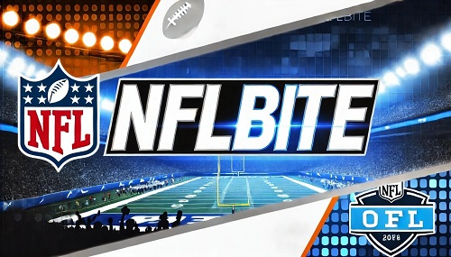

NFLbite | Reddit NFL Streams - Live NFLbite in High Quality
- NFLbite live
- NFL TV live
- NFL Streams live
- NFLbite Live live
Welcome to NFLbite, your ultimate destination for streaming NFL games live and free! Whether you're a die-hard fan eager to follow your favorite team through every play, or just looking to catch the latest action, NFLbite has you covered. Our platform offers high-quality, buffer-free streams of every NFL game, from the regular season to the playoffs and beyond. With user-friendly navigation and access across all your devices, you can enjoy the thrill of football anytime, anywhere. Dive in, explore our extensive game coverage, and never miss a moment of the excitement!
What is NFLbite?
Overview of NFLbite
NFLbite is a free online platform that specializes in streaming live NFL games and other major sports like basketball, UFC, and soccer. It was initially popularized through Reddit, where users sought reliable streams for NFL games. The platform curates links from third-party providers, making it easier for fans to find their desired games without paying for subscriptions.
The website's clean and intuitive interface allows users to access streams quickly, with a focus on providing high-definition (HD) content to enhance the viewing experience. It offers streams for games during the regular season, playoffs, and special events like the Super Bowl.
Key Features
Free Access: Unlike many streaming services that require paid subscriptions, NFLbite provides free access to live streams without sign-up or registration. This makes it a popular choice for fans looking to save on subscription costs.
High-Quality, Buffer-Free Streaming: NFLbite aims to deliver smooth, HD streams, minimizing buffering issues that are common with other free streaming platforms. It includes multiple streaming links per game, providing alternatives if a stream becomes unavailable.
Device Compatibility: NFLbite can be accessed through any device with a web browser, including smartphones, tablets, and laptops. This flexibility makes it easy for fans to watch games on the go.
How to Use NFLbite for Streaming
Navigating the Platform
Users can easily find live and upcoming games through a straightforward homepage layout. The homepage features a schedule of current matches, and users can select their desired game to view available streaming options. This structure ensures that even new users can navigate without difficulty.
Each game listing includes multiple streaming links, allowing viewers to switch to another link if one stream fails or experiences lag. This redundancy is especially useful during high-traffic events like playoffs.
Available Sports and Events
NFLbite primarily focuses on the NFL but also streams a range of other sports, including NBA, MLB, and combat sports like UFC and boxing. This variety attracts a wide audience beyond just American football fans.
The platform is particularly popular during the NFL season, covering regular-season games, playoffs, and major events like the Super Bowl, offering live updates and real-time commentary for fans.
Famous NFL Teams
Popular NFL Teams to Watch on NFLbite
- Dallas Cowboys: Known as "America's Team," the Cowboys are celebrated for their strong fan base and history of competitive success. They often feature in high-profile matchups that attract significant viewership.
- New England Patriots: Renowned for their dominance in the 2000s and 2010s, the Patriots have become synonymous with Super Bowl appearances and strategic gameplay under coach Bill Belichick.
- Pittsburgh Steelers: Famous for their "Steel Curtain" defense, the Steelers have a rich history and loyal fan following, making their games highly sought after by NFLbite users.
- Green Bay Packers: With a legacy dating back to the origins of the NFL, the Packers, led by stars like Aaron Rodgers, are frequently featured in key games, making them a favorite among fans.
- Kansas City Chiefs: Recent Super Bowl contenders, the Chiefs are popular due to their dynamic play style and the presence of quarterback Patrick Mahomes, who has elevated the team's profile.
Legal and Safety Considerations
Is NFLbite Legal?
NFLbite itself does not host any content but links to third-party streaming sites, placing it in a legal gray area. This setup means the legality of using NFLbite can vary depending on the location and copyright regulations of the viewer.
Users are advised to use a VPN for added privacy, especially if accessing streams from regions with strict copyright enforcement. This helps to maintain anonymity while avoiding geo-restrictions.
Security Risks
As with many free streaming sites, NFLbite users may encounter pop-up ads and intrusive advertisements, which could carry risks like malware. Using an ad blocker and keeping antivirus software updated are recommended precautions to enhance safety while streaming.
Benefits and Drawbacks of NFLbite
Advantages
NFLbite offers free and unrestricted access to a wide array of NFL games, making it an attractive option for fans who cannot afford premium services like NFL Game Pass or ESPN+. Its high-definition streams and multiple viewing options make for a pleasant viewing experience.
The cross-device compatibility allows users to enjoy games anywhere, whether on a smartphone or a larger screen at home.
Drawbacks
The platform's reliance on third-party streams means that quality and reliability can vary. Users may encounter broken links or streams that go offline during games.
Ads and pop-ups are common, which can interrupt the streaming experience. This is a typical trade-off for free streaming services.
Alternatives to NFLbite
Paid Alternatives
- NFL League Pass: Provides official streams of all NFL games with features like game replays and the ability to watch multiple games at once.
- ESPN+ and Hulu + Live TV: These services include comprehensive sports packages, offering live streams of NFL games and additional sports content.
Free Alternatives
Platforms like Pluto TV and StreamEast offer free sports content, but they often include ads and have limited access to live NFL games.
FAQs
Is NFLbite completely free?
Yes, it provides free access to streams without requiring payment or sign-up.
Can I watch games in HD on NFLbite?
Many streams are available in HD, though quality can vary based on the third-party source.
Does NFLbite have an official app?
NFLbite operates as a web-based service, with no official app currently available.
Can I watch replays of NFL games on NFLbite?
Yes, the platform often includes game replays for users who miss live broadcasts.
What should I do if a stream is not working?
Users can try alternative links provided for each game, as NFLbite typically lists multiple sources to ensure continuous access.
Do I need a VPN to access NFLbite?
While not strictly required, using a VPN can enhance security and help bypass any geo-restrictions, making it a safer option for users.